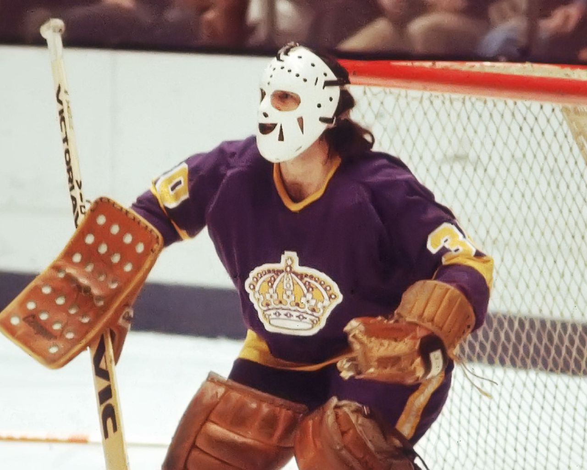
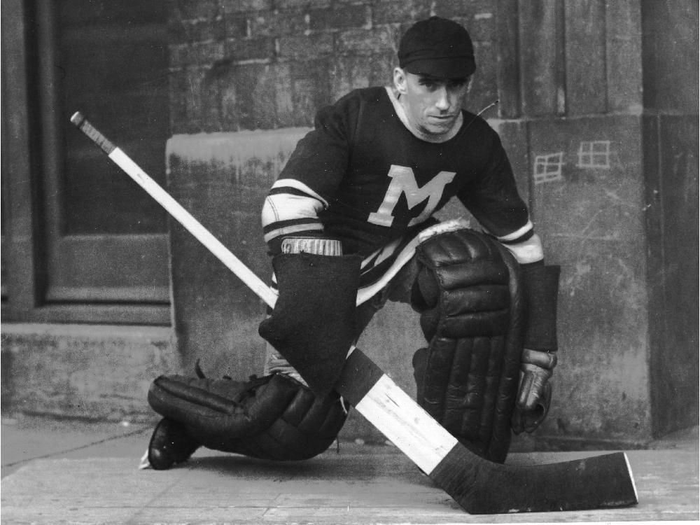

Welcome to White Ice Analytics
825
# of NHL Goaltenders (All-Time)
2.94
All-Time NHL GAA
.900
All-Time NHL Sv% (1956-Present)
7016
All-Time NHL Shutouts
Historical GAA (1918-2021)
Historical Sv% (1956-2021)
Rogie Vachon (#6 Adj. Sv%) w/ Los Angeles Kings

Top 10 2021 Adjusted Sv% (1956-2021)
| Rank | Name | Season | Team | GP | Adj. Sv% | Sv% | SO |
|---|---|---|---|---|---|---|---|
| 1 | Jacques Plante | 1970-1971 | TOR | 40 | 0.949 | 0.944 | 4 |
| 2 | Glenn Resch | 1975-1976 | NYI | 44 | 0.947 | 0.928 | 7 |
| 3 | Denis Herron | 1981-1982 | MTL | 27 | 0.947 | 0.911 | 3 |
| 4 | Ken Dryden | 1975-1976 | MTL | 62 | 0.946 | 0.927 | 8 |
| 5 | Rick St. Croix | 1980-1981 | PHI | 27 | 0.946 | 0.913 | 2 |
| 6 | Rogie Vachon | 1974-1975 | LAK | 54 | 0.945 | 0.927 | 6 |
| 7 | Bernie Parent | 1973-1974 | PHI | 73 | 0.944 | 0.932 | 12 |
| 8 | Bob Froese | 1985-1986 | PHI | 51 | 0.944 | 0.909 | 5 |
| 9 | Roland Melanson | 1982-1983 | NYI | 44 | 0.943 | 0.909 | 1 |
| 10 | Dominik Hasek | 1993-1994 | BUF | 58 | 0.943 | 0.930 | 7 |
Top 10 2021 Adjusted GAA (1918-2021)
| Rank | Name | Season | Team | GP | Adj. GAA | GAA | SO |
|---|---|---|---|---|---|---|---|
| 1 | Alec Connell | 1925-1926 | SEN | 36 | 1.39 | 1.12 | 15 |
| 2 | Bill Durnan | 1943-1944 | MTL | 50 | 1.43 | 2.18 | 2 |
| 3 | Clint Benedict | 1919-1920 | SEN | 24 | 1.47 | 2.66 | 5 |
| 4 | Flat Walsh | 1928-1929 | NYA,MMR | 11 | 1.53 | 0.76 | 4 |
| 5 | George Hainsworth | 1927-1928 | MTL | 44 | 1.60 | 1.06 | 13 |
| 6 | Tony Esposito | 1971-1972 | CHI | 48 | 1.60 | 1.77 | 9 |
| 7 | Bernie Parent | 1973-1974 | PHI | 73 | 1.63 | 1.89 | 12 |
| 8 | Ken Dryden | 1975-1976 | MTL | 62 | 1.63 | 2.03 | 8 |
| 9 | Bernie Parent | 1974-1975 | PHI | 68 | 1.64 | 2.04 | 12 |
| 10 | Jacques Plante | 1970-1971 | TOR | 40 | 1.67 | 1.89 | 4 |
Alec Connell (#1 Adj. GAA) w/ Montreal Maroons
